|
|||||||||||||||||||||||||||
|
２０１０年 春の全国集会 （蔵王高原） |
| 開 催 日 | ２０１０年３月２７日〜２８日 | |||
| 運営責任者 | 益崎 | |||
| 行動総指揮 | 中川、千石 | |||
| HPまとめ | 西田 | |||
| 参加者数 | ５１名 （メンバ４３名、ゲスト６名、宮城支部２名） |
|||
| アルパインスキークラブの２０１０年春の全国集会は、蔵王高原で開催された。 遠刈田温泉の宮城蔵王ロイヤルホテルに宿を取り、26日に前泊する人、27日朝に到着する人、合わせて36人がオプション企画の不忘山にスキー登山した。 その夜は、ホテルでの懇親会で再会を懐かしんだ。 28日は、刈田岳往復コース（２１名）と蔵王越えコース（３０名）に分れて、山スキーを楽しんだ。 |
| ３月２７日 | 不忘山往復コース |
| 開 催 日 | ２０１０年３月２７日 | |||
| リーダー | 中川班 ： L中川、SL木村（喜） 益崎班 ： L益崎、SL竹越 安井班 ： L安井、SL中山 荻野班 ： L荻野、SL日出平 千石班 ： L千石、SL千葉 細川班 ： L細川、SL田中 |
|||
| HP制作 | 西田 | |||
| 写真協力 | 野口 | |||
| 参加者数 | ３６名 | |||
| 不忘山（ふぼうやま）往復コースは、本番の蔵王越え・刈田岳往復コースの前日に、オプション企画として行われた。３６名が６班に編成され、一部途中リタイヤ組を除き、頂上に到達した。強風とウインドパックされた雪に悩まされたが、長い滑降を楽しむことができた。 |
| みやぎ蔵王白石スキー場スキーセンター発9:15→スキーデポ12:15→不忘山山頂(1705m)着12:32→出発12:40→スキーセンター着14:07 |
| 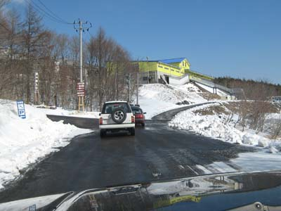 | A | 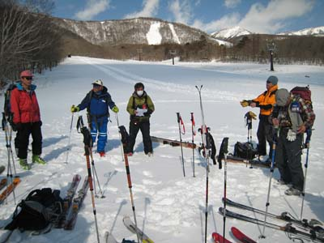 |
| 続々と車でみやぎ蔵王白石スキー場に向かう | 閉鎖しているスキー場で班ごとにブリーフィングとビーコンのチェック |
| 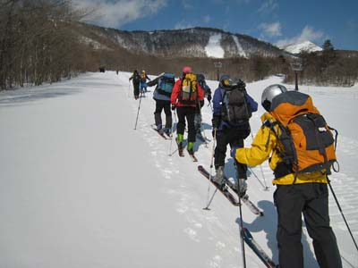 | A | 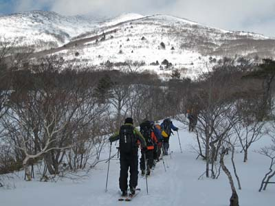 |
| 最初からシールを付けて登り始める | １時間余り登るとブッシュ越しに不忘山の頂上らしい山が見え始める |
| 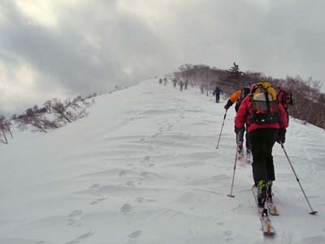 | A | 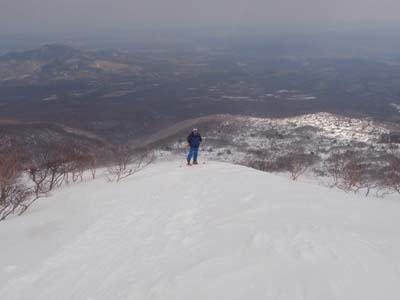 |
| やせ尾根の登りになる。天候が悪化し、風が強い。 | 振り返ると、下界の展望はある |
| 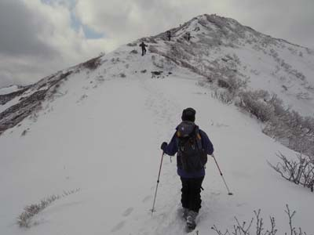 | A | 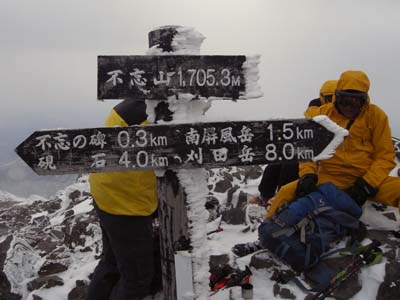 |
| スキー板をデポしてやせた山稜を行く |
デポ地から15分で不忘山山頂に着いた |
| 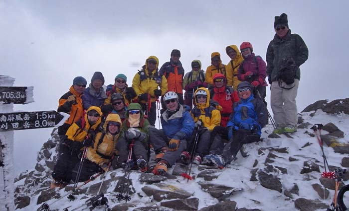 |
|
この時一緒に登頂した18名の山頂での記念写真。山頂は狭く、風が強かった。 |
| 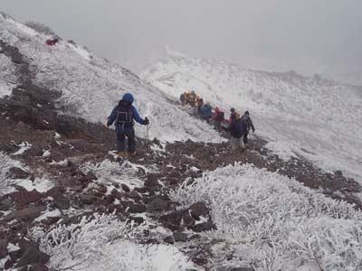 | A | 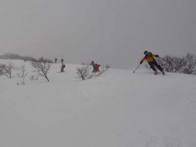 |
| 下山。行きはよいよい（でもなかったが）、帰りは恐い | 板を履けば颯爽と！ |
| 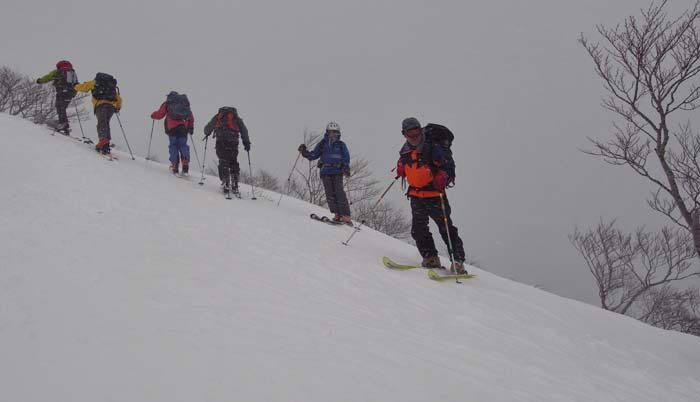 |
|
朝到着班が続々と登ってきた。登る４名と下る２名が挨拶を交わしてすれ違う |
| 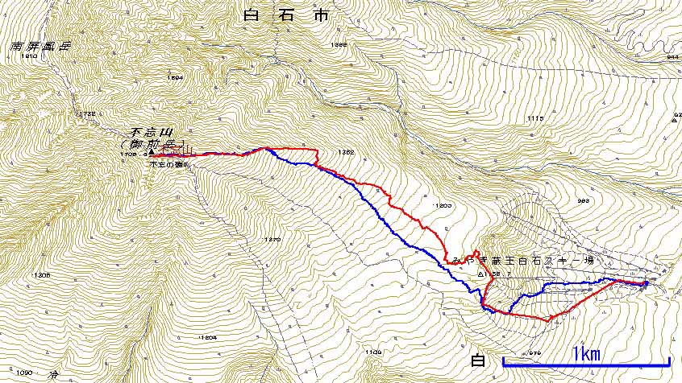 |
| 不忘山往復コースのGPS軌跡 ━ 登り、 ━ 下り （データ提供：益崎） |
| ３月２７日 | 懇 親 会 |
| 開 催 日 | ２０１０年３月２７日 | |||
| 司 会 | 中川 | |||
| HP制作者 | 藪田 | |||
| 参加者数 | ４８名 | |||
| 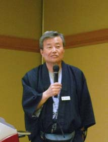 | A | 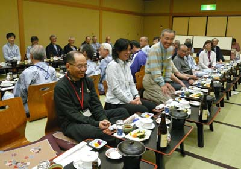 | A | 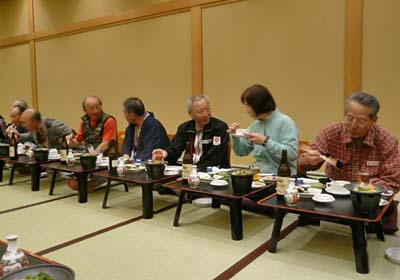 |
| 懇親会は、宮本代表と益崎幹事長（写真）の挨拶、小松原さんの乾杯で始まった | ||||
| 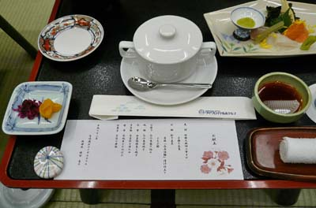 | A | 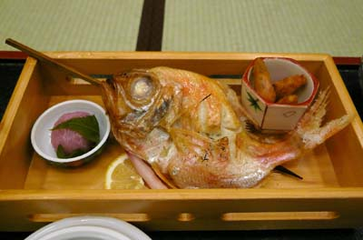 |
| 豪華な料理と旨い酒で、懇親会は２次会まで続いた | ||
| ３月２８日 | 朝出発前にホテル玄関で集合写真 |
| 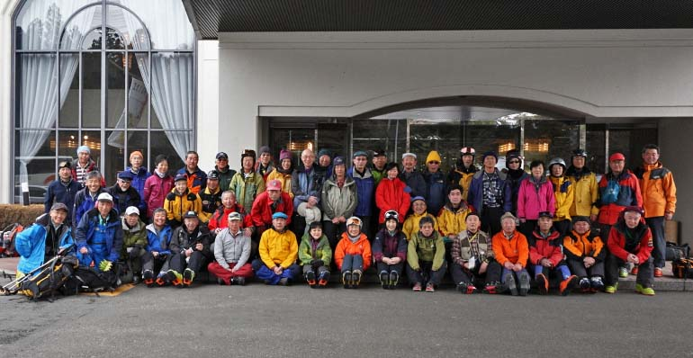 |
| 遠刈田温泉・宮城蔵王ロイヤルホテルの玄関で、朝出発前に集合写真 （撮影 小松原） |
| ３月２８日 | 刈田岳往復コース |
| 開 催 日 | ２０１０年３月２８日 | |||
| リーダー | 木村班 ： L木村(喜）、SL齊藤（健） 竹越班 ： L竹越、 SL清野 |
|||
| HP制作者 | 高井（紀） | |||
| 参加者数 | ２１名 | |||
| 刈田岳往復コースは竹越班と木村班の２班編成された。両班共に全員が頂上に到達。この時期としては前夜の恵みの雪がもたらした上質の雪の斜面を楽しみつつ下った。視界は良くなかったが、細かく立てられているポールを目印に滑り、皆が満足したスキー山行であった。 |
| 澄川ゲレンデ・リフト発9:00→リフト終点着9:20→出発9:35→刈田岳山頂(1758m)着11:45→出発12:15→ゲレンデ下着13:15 |
| 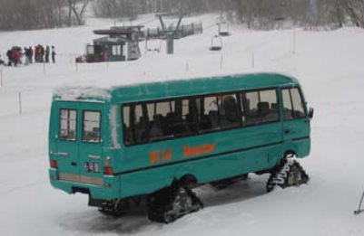 | A | 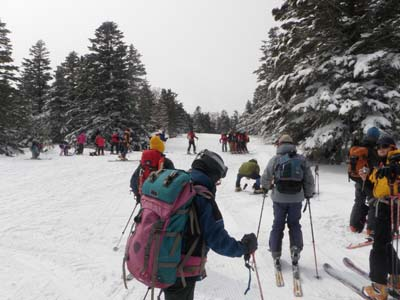 |
| 山頂まで行く雪上車ワイルドモンスターもある(\3,000／回) | 我々はシールをつけて出発 |
| 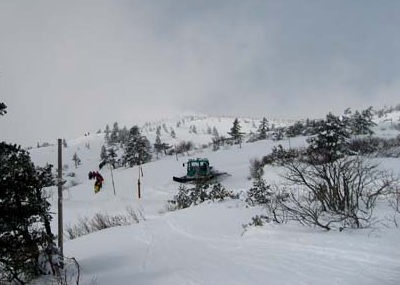 | A | 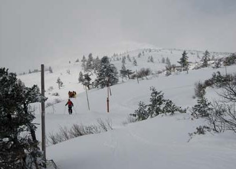 |
| 蔵王エコーラインの除雪車稼働中の道路を越えて進む | ポールに沿ってコースを取る。前を行く竹越班 |
| 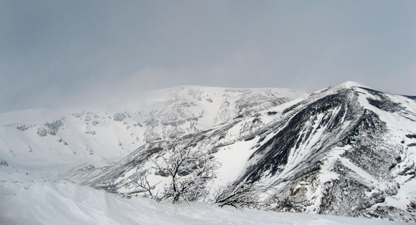 |
| ガスが切れると素晴らしい景色が展開する。手前：五色岳 後：馬の背から熊野岳 |
| 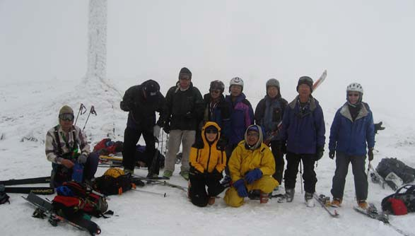 |
| 頂上で刈田嶺神社をバックに木村班の記念撮影 |
| 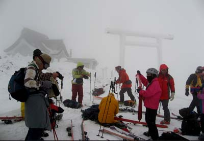 | A | 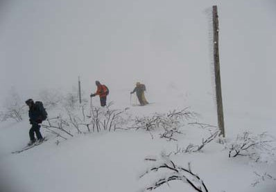 |
| 視界は悪いが風はないのでリラックスする。 | リーダーに付いて降りはじめる |
| 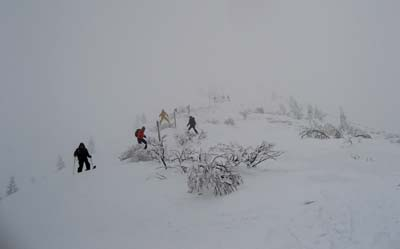 | A | 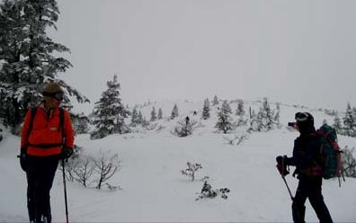 |
| 狭い尾根をポールに沿って慎重に滑る | 木も疎らで雪は良し。この時期にこんなスキーが出来るなんて！ |
| 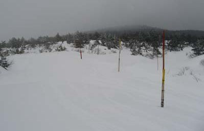 | A | 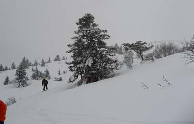 |
| ポールの周りもこんな広い | 楽しい滑りはほぼ終了。後はスキー場に向かって降りるだけ〜楽しかった！ | |
| 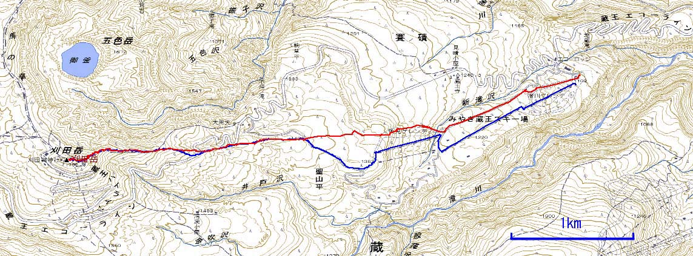 |
| 刈田岳往復コースのGPS軌跡 ━ 登り、 ━ 下り （データ提供：高井（紀）） |
| ３月２８日 | 蔵王越えコース |
| 開 催 日 | ２０１０年３月２８日 | |||
| リーダー | 荻野班 ： L荻野、SL木下 中川班 ： L中川、SL中村 益崎班 ： L益崎、SL田中 細川班 ： L細川、SL村松 安井班 ： L安井、SL千石 |
|||
| HP制作者 | 野口 | |||
| 写真協力 | 梅津、荻野、中川、小林 | |||
| 参加者数 | ３０名 | |||
|
前日のブリーフィングでは、好天は見込めず、蔵王越えは絶望的に思われた。それで、安心して（？）夜遅くまで飲んでいた人もいたようである。当日は８時少し前にバスで蔵王ロイヤルホテルを出発。宮城蔵王の澄川スキー場へ向かう。30分ほどで到着した。 |
| 澄川ゲレンデ・リフト8:50→リフト終点着9:20→シールを付けて出発9:30→刈田岳山頂(1758m)着11:０4→出発11:45 熊野岳山頂発13:20→地蔵岳から滑降開始14:15→ゲレンデ山麓着14:40→バスで宮城蔵王ロイヤルホテル着16:08 |
| 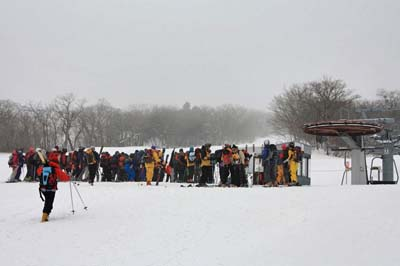 | A | 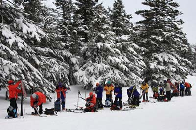 |
| ９時前からリフト乗り場に並ぶ 50人のパーティーの迫力に押されてか、早めにリフトを動かしてくれた |
リフトを乗り継いで第3リフト終点へ（1380m） |
| 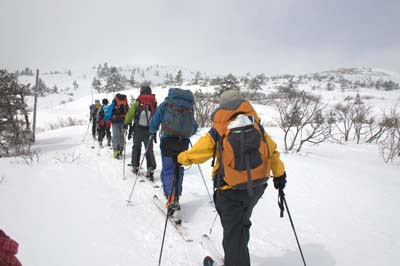 | A | 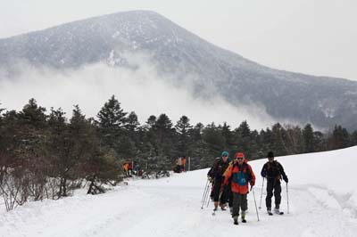 |
| 最初はしばらく林道を行く | それから山道に入る。後方に見えるのは後烏帽子岳。 |
| 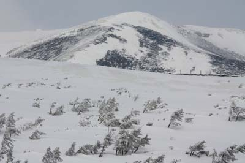 | A | 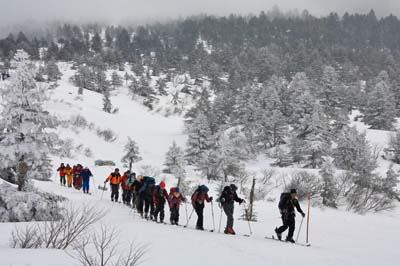 |
| 前方に刈田岳が見えた。雪が少なそう。 |
後続部隊も続々と |
| 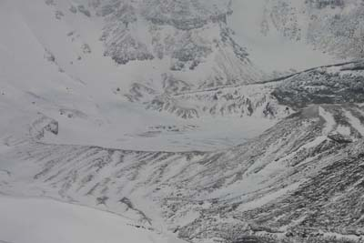 | A | 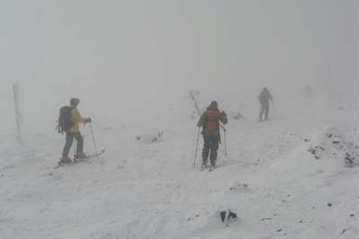 |
| お釜がみえた。刈田岳の右手の尾根が馬の背だ。 | 上の方はアイスバーンの斜面 |
|
A |
|
||||||||||||
| 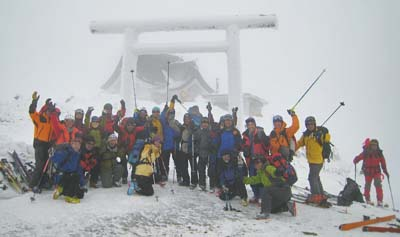 | A | 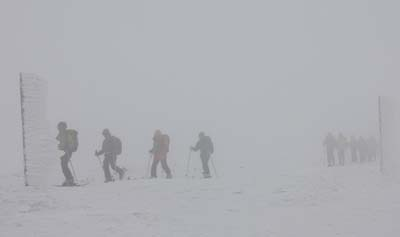 |
| 刈田嶺神社の鳥居の前で集合写真を撮って、いざ出発！ |
ホワイトアウトの馬の背を、北へ隊列をなして行く。馬の背はほとんど高低差を感じない広大な尾根道で、迷ったら大変そうだが、道脇にはずっと、ポールが立っている。ポールに沿って歩いていけば迷うことはない。逆説的に言うと、このコースはホワイトアウト向け。強風で有名なコースで、ポールのエビの尻尾が見事。風は弱くはないが、耐風姿勢をとるほど強くはなかった。 |
| 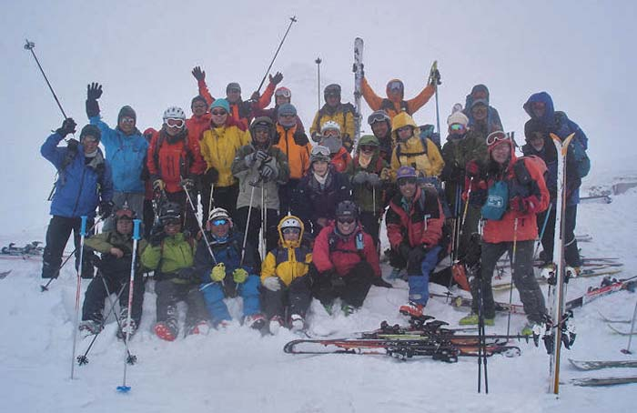 |
| 熊野岳山頂（1841ｍ）で、全員で集合写真。お堂が背後に写っているはずだったが・・・。 ここで初めてシールをはがした。滑降開始！ |
| 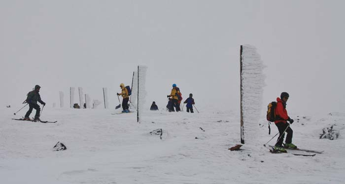 |
| ポールのところまで戻ってから、地蔵山方面へ向かう。1700mのコルまで下ってから、板を手に持って地蔵山の東手前1735mのピークに登った。結構、しんどかった。そこから板を履いて、下る。ポールを巻く人の姿が、右に左に続く。 |
| 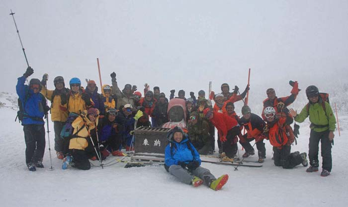 |
| 肩まで雪に埋没したお地蔵様の周囲で集合写真。14:15、ゲレンデ滑降開始。20分で山麓に着いた。 手配されていたバスで宮城蔵王ロイヤルホテルへ向かう。16:08、帰着。 |
| 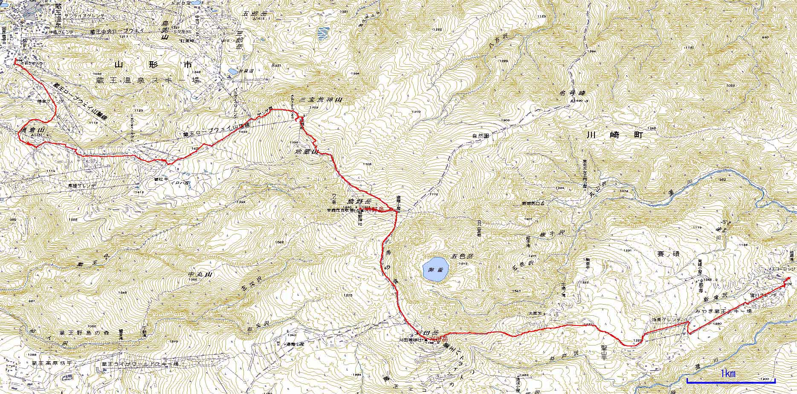 |
| 蔵王越えコースのGPS軌跡 （データ提供：益崎） スクロールしてご覧下さい→ |
| ８０歳以上２名を含む平均年齢６８歳の５１名が参加した日本山岳会アルペンスキークラブの２０１０年春の全国集会は、無事終了した。 ツアーの下見、当日のガイドなど、いろいろとご支援下さった宮城支部の皆さん始め関係者の皆さんに、心から感謝します。 |